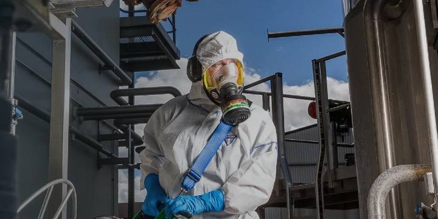

Що таке інтегрована боротьба зі шкідниками?
Інтегрована боротьба зі шкідниками (IPM) – це системний підхід до управління шкідниками, який поєднує різні методи та практики для мінімізації використання хімічних засобів і забезпечення безпеки довкілля.
7 кроків до ефективної програми боротьби зі шкідниками
- Інспекція: Регулярні перевірки місць, де найбільш ймовірна поява шкідників, таких як прийомні доки, складські приміщення та кімнати відпочинку співробітників.
- Профілактичні заходи: Усунення виявлених вразливостей, наприклад, герметизація потенційних точок проникнення шкідників.
- Ідентифікація: Визначення виду шкідників для вибору найбільш ефективних методів боротьби.
- Аналіз: Оцінка рівня зараження та визначення причин появи шкідників.
- Вибір методів боротьби: Застосування комбінації методів, включаючи механічні, біологічні та хімічні засоби.
- Моніторинг: Постійне спостереження за ефективністю застосованих заходів та виявлення нових загроз.
- Документація: Ведення записів про всі проведені заходи, результати інспекцій та використані методи боротьби.

Процес боротьби зі шкідниками на підприємстві